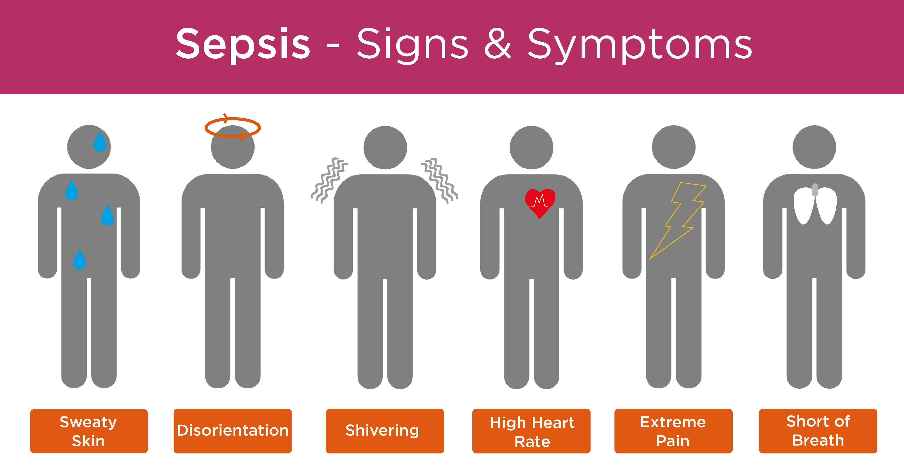

Sepsis Symptoms
There are three stages of sepsis: sepsis, severe sepsis, and septic shock. Sepsis can happen while you’re still in the hospital recovering from a procedure, but this isn’t always the case.
It’s important to seek immediate medical attention if you have any of the below symptoms. The earlier you seek treatment, the greater your chances of survival.

Sepsis
Symptoms of sepsis include:
1. A fever above 101ºF (38ºC) or a temperature below 96.8ºF (36ºC)
2. Heart rate higher than 90 beats per minute
3. Breathing rate higher than 20 breaths per minute
4. Probable or confirmed infection
5. You must have two of these symptoms before a doctor can diagnose sepsis.
Severe sepsis
Sepsis occurs when there’s organ failure. You must have one or more of the following signs to be diagnosed with severe sepsis:
1. Patches of discolored skin
2. Decreased urination
3. Changes in mental ability
4. Low platelet (blood clotting cells) count
5. Problems breathing
6. Abnormal heart functions
7. Chills due to fall in body temperature
8. Unconsciousness
9. Extreme weakness
Septic shock
Symptoms of septic shock include the symptoms of:
1. Severe sepsis, plus a very low blood pressure.